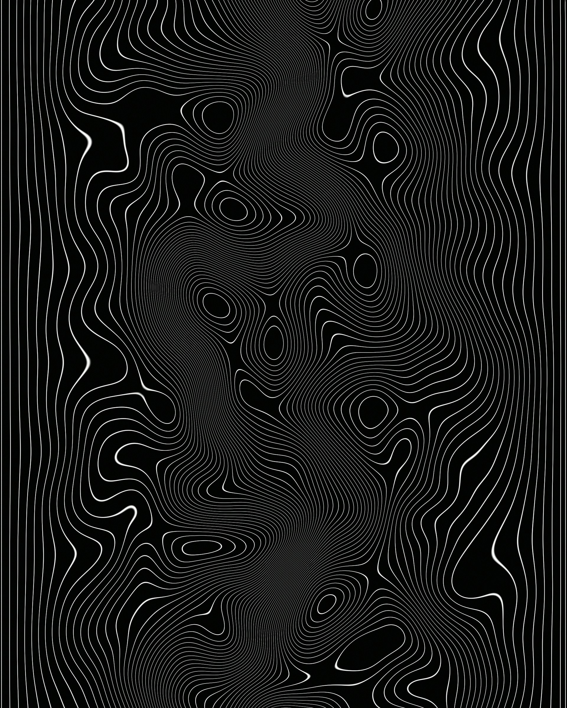

Coursework Links
Here’s a collection of my work from this semester:
Do you keep a journal?
Yes I do! I have a poetry journal that I (try) to write in every day. My goal is one poem a day, and the contents usually depict nature or emotion.
Really Boring Fact About Me
I lowkey like my milk warm.
Modern Slang I Wish Would Go Away
Slang: Brain Rot
Definition: The mental fatigue from consuming too much low-quality internet content.
Why I Don't Like It: I feel like short-form content is starting to affect people negatively, especially younger audiences, and it’s becoming more noticeable over time.
Recent Article I Liked
Article: The Healing Power of Laughter in Uncertain Times
Why I Liked It: It’s something I can fully get behind and agree with.
Cool Picture I Found on Unsplash

Credit: Photo by Resource Database on Unsplash